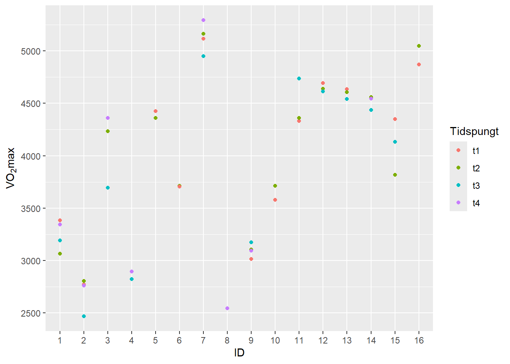

1 Reliabilitet
1.1 Intrtoduksjon
Hensikten med denne rapporten er å presentere estimater for reliabilitet av data samlet i fysiologisk testlab ved Høgskolen i Innlandet. Hovudfokuset i eksperimentet er å vise til god standardisering og gjennomtenkt metode for å minske støy, det er viktig for å auke reliabiliteten (Halperin, Pyne, and Martin 2015). Ifølge (Hopkins 2000) er reliabilitet reproduserbarheten av verdier fra en test, analyse eller annen måling ved gjentatte forsøk på samme individ. Vi har gjennomført \(\dot{V}O_{2max}\) tester på sykkel der 16 deltakere har gjennomført 2 eller 4 tester i løpet av tre uker. De to første testene ble gjennomført med ca. 24 timers mellomrom i uke en. De to siste testene ble gjennomført med ca. 48 timers mellomrom i uke tre. Vi har brukt Rstudio for å analysere dataen og få svar på om våre tester er reliable.
1.2 Metode
Vi gjennomførte ein test-retest i studien vår, der vi samla data frå fleire \(\dot{V}O_{2max}\)-testar. 16 deltakarar gjennomførte to til fire testar i løpet av ein periode på tre veker. Dei to første testane blei gjennomførte innan 24 timar i løpet av den første veka. Dei siste to testane blei gjennomførte innan 48 timar i løpet av den tredje veka.
1.2.1 Standardisering av testar
Resultata av ein \(\dot{V}O_{2max}\)-test blir påverka av ulike fysiologiske og miljømessige faktorar, så det er viktig å setje visse reglar som deltakarane må følgje i dagane før testen. Ein rettleiar kan sendast ut til deltakarane nokre dagar før den første testen, med informasjon om korleis dei skal førebu seg. Denne rettleiaren bør inkludere standardiseringspraksisar som bidreg til å isolere deltakarens faktiske aerobe kapasitet og eliminerer ytre faktorar som kan påverke testresultata. Biologiske faktorar som blir kontrollerte, inkluderer trening, hydrering, søvn, inntak av koffein og kaloriar, alkoholkonsum og tidspunkt for testen. Deltakaren må følgje same rutine fram mot neste test for å sikre nøyaktige, pålitelege og samanliknbare resultat.
1.2.2 Utstyr
Spesifikt utstyr er nødvendig for å gjennomføre ein \(\dot{V}O_{2max}\)-test. Vi fekk deltakarane til å utføre testen på ein elektromagnetisk bremsa sykkelergometer (Lode Excalibur Sport, Lode B. V., Groningen, The Nederland) for å utfordre deltakarens aerobe kapasitet. Vi brukte også eit system kalla Vyntus CPX mixing chamber (Vyntus CPX, JaegerCareFusion, UK) for å måle \(\dot{V}O_{2max}\) For å måle hjartefekvensen blei det brukt pulsmonitor festa til brystet. For å måle laktatnivået til deltakarane brukte vi ein maskin kalla Biosen c-line (EKF diagnostic GmbH, Barleben, Tyskland). Det blei også brukt ei stoppeklokke, ein ekstra datamaskin for excel-arket vårt for plotting og ei badevekt for å måle vekta til deltakarane før testen starta. Denne oppsettet lar oss overvake og måle dataene som trengst for å bestemme deltakarens \(\dot{V}O_{2max}\) og gir oss nøyaktig informasjon om deltakarens oksygenforbruk, hjartefrekvens og kraft under sykling.
1.2.3 Testprotokoll
Testprotokollen for \(\dot{V}O_{2max}\)-testen fortel korleis testen skal utførast kvar gong for å sikre nøyaktige og pålitelege resultat. Ein deltakar bør difor ha same testleiar om testen blir gjentatt. Under testane følgde vi denne protokollen: Før testleiaren kjem til laboratoriet, blir eit excel-ark førebudd. Ved ankomst tek testleiaren på seg labfrakk og sikrar at Biosen er slått på. Maskina skal kalibrerast, og resultatet skal vere 12 mmol/la. Ved kalibreringsfeil, noko som betyr at instrumentet kan gi unøyaktige data, blir standardvæska bytt ut. Vyntus må og kalibrerast med gass- og volumkalibrering. Vi har satt grensar for at gasskalibrering må vere innanfor 2,0 diff., og at volumkalibrering må vere innanfor 0,2 diff. Her må gassbehaldar opnast, og ventilasjonsvolumtransduseren (Triple-V-turbin) koplast til Vyntus. Mens kalibreringa er i gang, set testleiaren saman munnstykket, festar naseklypa, og koplar det til miksekammeret. Sykkelergometeren må deretter kalibrerast ved å posisjonere krankarmen vertikalt. Denne kalibreringa skjer på datamaskinen kopla til ergometeret, då vi bruker eit anna program her enn Vyntus. Pedalarmen blir kontrollert for å sikre at han er 172,5mm lang, og at riktig pedaltype er montert. Til slutt blir utstyret for laktatmåling henta, og alt er klart til deltakarens ankomst.
Ein deltakarprofil må opprettast i både Vyntus og ergometerprogrammet. Profilen inkluderer deltakarens namn, fødselsdato, kjønn, høgd og vekt. Det første vi gjer når deltakaren kjem, er å måle vekt minus 300g. Sykkelergometeret blir deretter justert slik at deltakaren sit komfortabelt på sykkelen. Sykkelinnstillingane blir deretter lagra i sykkelprogrammet for å bli brukt ved framtidige testar. Oppvarminga varer i fem minutt, der deltakaren skal ha ei gradvis auke på Borgs skala for opplevd anstrengelse (RPE) frå 10 til 13. Om deltakaren ønskjer det, blir vifta slått på og retta mot dei. Testleiaren gir deretter informasjon om testen og Borgs skala.
Vyntus blir deretter sett til “måling,” og testleiaren sikrar at pulsmonitoren er kopla til Vyntus, samt at innstillingane er sette til 30-sekundsmålingar og storleik medium for munnstykket. Gassbehaldar blir lukka, og Triple-V blir kopla frå Vyntus og fest til miksekammeret. Oppvarminga er ferdig, og testen blir starta i Vyntus. Den eigentlege testen startar når 1 minutt har gått i Vyntus, og \(\dot{V}O_{2max}\)-protokollen startar i sykkelprogrammet. Ei stoppeklokke blir også starta og plassert framfor deltakaren.
Under heile testen informerer testleiaren om auken i motstand (W), vanlegvis 20 W for kvinner og 25 W for menn, og motiverer deltakaren til å sykle til utmatting. Testen stoppast når deltakaren gir opp eller RPM fell under 60. Testleiaren noterer den maksimale pulsen, sluttida, watt ved endt test og Borgs score på slutten av testen i excel-arket. Laktat blir målt eit minutt etter at testen er ferdig, ved å tørke av fingeren til deltakaren, stikke hol, tørke av den første bloddropa og fylle opp røret. Blodet blir deretter analysert i Biosen. Deltakaren er ferdig for deltakaren, og testleiaren avsluttar testen i både Vyntus og sykkelprogrammet. Sykkelen, munnstykket, slangen og pulsmonitoren blir vaska, og vifta blir vend mot miksekammeret for å la det tørke.
1.2.4 Data behandling etter test
Korrekt innsamling av data frå testen er avgjerande, då det gir oss innsikt i deltakarens aerobe kapasitet. Rapporten generert av Vyntus blir lagra på ein minnepinne, slik at ho seinare kan lagrast på OneDrive. Excel-arket blir deretter fylt ut med verdiar frå rapporten. Desse verdiane inkluderer absolutt \(\dot{V}O_{2max}\), uttrykt i milliliter oksygen per minutt (ml/min), som gir oss det totale oksygenforbruket til deltakaren, noko som er nødvendig for å vurdere den aerobe kapasiteten. Maksimalt volum av karbondioksid (CO2) produsert (vco2.max) fortel oss kor mykje CO2 som blir utskilt av kroppen til deltakaren under testen. Respiratorisk utvekslingsforhold (RER) blir brukt til å estimere forholdet mellom karbondioksid (CO2) produsert og oksygen (O2) forbrukt under metabolisme. Maksimal ventilasjonsvolum per minutt (VE.max) er det høgaste volumet av luft deltakaren kan flytte inn og ut av lungene per minutt. Maksimal pustefrekvens (BF.max) er det høgaste talet på pust per minutt. Til slutt blir laktatmålingane samla frå Biosen. Vi fekk deretter data frå dei andre gruppene og samla alt i eit excel-ark. Dataene blei deretter eksporterte til RStudio, der vi analyserte resultata vidare.
1.3 Resultat
| ID | Test 1 | Test 2 | Test 3 | Test 4 |
|---|---|---|---|---|
| ID1 | 3381.5 | 3065.0 | 3190.0 | 3343.0 |
| ID2 | 2771.0 | 2801.5 | 2464.5 | 2760.0 |
| ID3 | 4234.5 | 4235.0 | 3693.5 | 4361.0 |
| ID4 | NA | NA | 2819.5 | 2893.0 |
| ID5 | 4427.0 | 4359.5 | NA | NA |
| ID6 | 3704.5 | 3713.5 | NA | NA |
| ID7 | 5116.5 | 5163.5 | 4951.0 | 5294.5 |
| ID8 | NA | NA | NA | 2543.5 |
| ID12 | 4694.0 | 4640.5 | 4614.0 | NA |
| ID9 | 3014.5 | 3103.5 | 3170.5 | 3093.0 |
| ID10 | 3576.5 | 3713.0 | NA | NA |
| ID11 | 4332.5 | 4362.0 | 4737.0 | NA |
| ID13 | 4634.5 | 4606.5 | 4540.5 | NA |
| ID14 | 4556.5 | 4561.5 | 4437.0 | 4545.0 |
| ID15 | 4350.5 | 3818.5 | 4134.0 | NA |
| ID16 | 4872.0 | 5050.0 | NA | NA |
Resulatata frå vår utrekning av målefeil frå \(\dot{V}O_{2max}\) testane viste at mellom t1 og t2 var 3.2% variasjonskoeffisienten og mellom t3 og t4 var 4.2% variasjonskoeffisienten. Det tisvarar ein målefeil på 129.8ml mellom t1 og t2 og på 170.3ml mellom t3 og t4.
1.4 Diskusjon
Variasjonskoeffisientane på 3.2% og 4.2% er eit mål på den typiske prosentvise feilen i målingane. Det er både styrker og svakheter ved vår gjennomføringar av testane. Dette var for mange, både som deltakar og testledar, det første møtet med fysiologisk testlabb og \(\dot{V}O_{2max}\) test. Sjølv om formålet med rapporten var å estimere reliabilitet, så var hensikta med testgjennomføringane at deltakarane skulle lære seg å gjennomføre ein \(\dot{V}O_{2max}\) protokoll. Dette førte til svakhetar ved at det blei brukt 16 forskjellige testledrarar og assistentar, data vart henta frå fire forskjellige grupper, anntall observatørar varierte og innsatsen var ikkje alltd maksimal på grunn av varierande motivasjon blandt studentane i undervisninga. På ei annna side var ustyret av grullstandard ved testing av \(\dot{V}O_{2max}\) og lærar med erfaring og høg kompetanse.
Ifølge (Hopkins 2000) er observert endring reliabel om den er større enn den typiske feilen. I vårt tilfelle vil det tilsvare ein større endring enn 129.8ml og 170.3ml noko vi synes er i overkant mykje for å kunne fastslå endring i ein \(\dot{V}O_{2max}\) test. Dei nevnte svakhetene ved gjennomføringane vil operere som forstyrrende variabler og kan dermed virke negativt på reliabiliteten (Halperin, Pyne, and Martin 2015).
1.5 Konklusjon
Basert på vår estimering av reliabiliteten frå testane våre synest vi at variasjonscoefesienter på 3.2% og 4.2% er for høge. Det vil då kreve i overkant mykje å skulle bekrefte endring ved ein ny test. Det kjem sansylegvis som følge av ein for dårleg og variert gjennomføring av metoden.
Halperin, Israel, David B Pyne, and David T Martin. 2015. “Threats to Internal Validity in Exercise Science: A Review of Overlooked Confounding Variables.” Int. J. Sports Physiol. Perform. 10 (7): 823–29.
Hopkins, W G. 2000. “Measures of Reliability in Sports Medicine and Science.” Sports Med. 30 (1): 1–15.